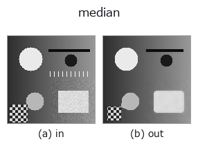

rank op• Datenarten: image → image
• Aufruf: fullseye.apply(img, "median", a=0.5, b=0.5) (das 2-D-Modell ist ein Bild plus zwei skalare Regler a,b∈[0,1])
• HALCON-Äquivalent: median_image (Bedeutung und Parameter sind in der HALCON-Referenz nachzulesen)

*Die Abbildung ist die tatsächliche Ausgabe auf einer synthetischen 128×128-Eingabe. Links Eingabe, rechts Ausgabe. Punktwolken als Draufsicht-Streudiagramm (Helligkeit = z), 1-D-Reihen als Linie, Volumen als Maximum-Projektion entlang z, Videos als mittleres Bild, komplexe Bilder als Betrag; Rückgabewerte, die kein Bild ergeben, werden als Werte gezeigt.*
Regler a durchfahren (0,1 / 0,5 / 0,9, der andere Regler auf Standard):
▸ median: knob a sweep (docs site)
*Regler b ändert die Ausgabe nicht (gemessen: identisch bei 0,1 / 0,5 / 0,9).*
Auf anderen Bildern (synthetische Szene / Foto / Münzen. Obere Reihe: Eingaben, untere Reihe: deren Ausgaben. Regler auf Standard):
▸ median: other inputs (docs site)
*Keine Farb-Eingabe (H,W,3) gezeigt: dieser Op behandelt den Farbkanal als dritte Raumachse (vermischt Kanäle). Pro Kanal aufrufen.*
Medianfilter. Entspricht HALCONs `median_image` (Compute a median filter with various masks.).
> Die ausführliche Beschreibung unten ist der Originaltext — Zusammenfassung und Überschriften sind übersetzt.
`a が窓サイズを 3,5,7,9（_k(a)）に振る。b` は未使用。塩胡椒ノイズなど外れ値に強く、ガウシアン平滑よりエッジを保ちやすい。
• Leitfaden zur Familie gallery2d_smoothing_rank
• Katalog der Beispieldaten (Download-URLs / Lizenzen) — 2-D nutzt skimage.data (BSD/Public Domain) plus synthetische Bilder, 3-D nennt Download-URLs echter Datenquellen (Stanford, PDS, …).
• Herkunft und Literatur der Operatoren — die Quellen der Forschung/Verfahren, auf denen diese Operatorfamilie beruht.
• Der kanonische Algorithmus (Autor, Jahr) und seine Anwendungen stehen im Familienleitfaden oben.
Das Programm unten ist nachweislich lauffähig (gleiche Eingabe wie die Abbildung). In der Studio-Hilfe wird dieser Block zu Schaltflächen, die es sofort laden und ausführen.
median 0.50 0.50
▸ Load this pipeline · Load & run
• astro_stacking — py -3.11 examples/astro_stacking.py
• blas_thread_budget — py -3.11 examples/blas_thread_budget.py
• ct_reconstruction — py -3.11 examples/ct_reconstruction.py
• gallery2d_smoothing_rank — py -3.11 examples/gallery2d_smoothing_rank.py
• lightfield_depth — py -3.11 examples/lightfield_depth.py
• photon_timeresolved — py -3.11 examples/photon_timeresolved.py
• piv_flow_from_particles — py -3.11 examples/piv_flow_from_particles.py
• poc_astro_photometry — py -3.11 examples/poc_astro_photometry.py
• poc_dtof_ranging — py -3.11 examples/poc_dtof_ranging.py
• poc_lidar_terrain_change — py -3.11 examples/poc_lidar_terrain_change.py
• poc_nuclei_ploidy — py -3.11 examples/poc_nuclei_ploidy.py
• poc_pv_thermal_survey — py -3.11 examples/poc_pv_thermal_survey.py
• poc_river_surface_velocity — py -3.11 examples/poc_river_surface_velocity.py
• poc_web_roll_periodicity — py -3.11 examples/poc_web_roll_periodicity.py
• poc_weld_bead_profile — py -3.11 examples/poc_weld_bead_profile.py
• quickstart — py -3.11 examples/quickstart.py
• specular_photometric — py -3.11 examples/specular_photometric.py
image als Eingabe)identity · gaussian · mean_box · bilateral · unsharp · min_filter · max_filter · percentile
rank)min_filter · max_filter · percentile · sk_median_disk · cv_median · median_image · median_rect · median_separate
*Provenance: ops.py — 2D Operator-Registry. Diese Notiz wird von tools/opdocs.py md erzeugt (nicht von Hand bearbeiten).*
© 2026 Kazufumi Furuse — Fullseye operator documentation. Licensed under Apache-2.0.
{kind=link}
{kind=link}